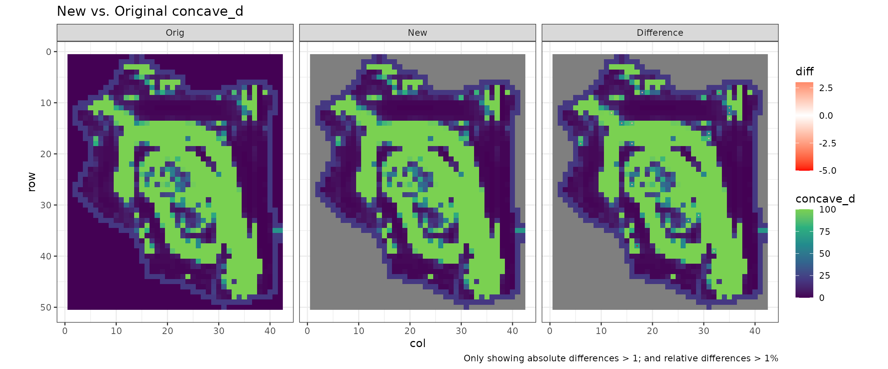
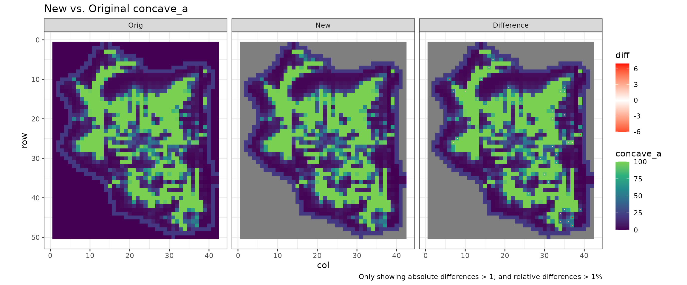
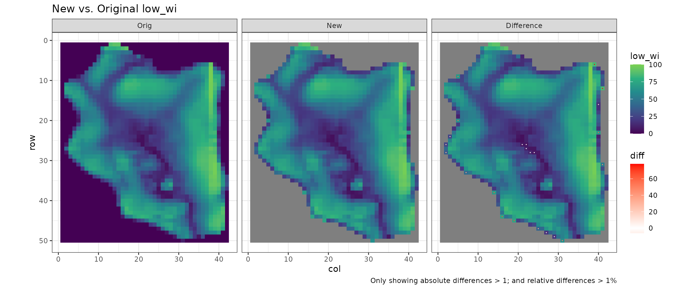
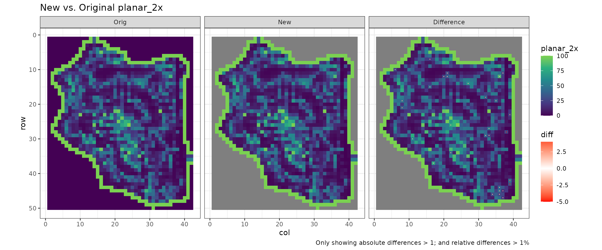
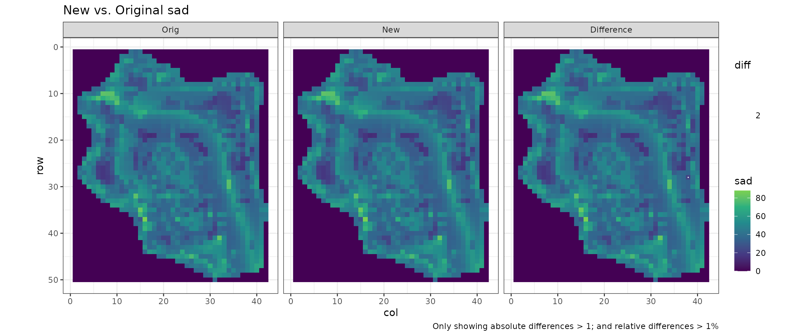
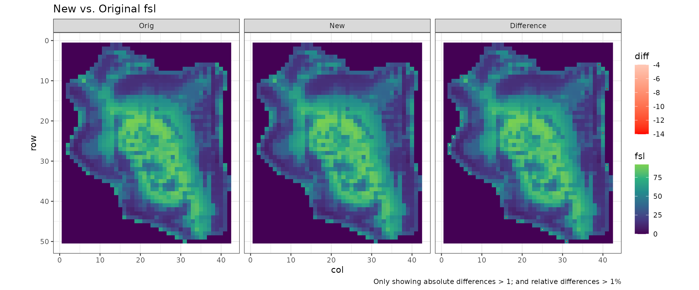
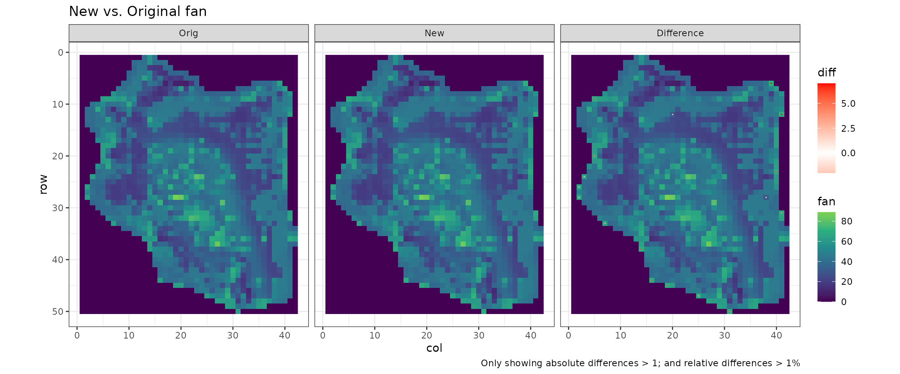
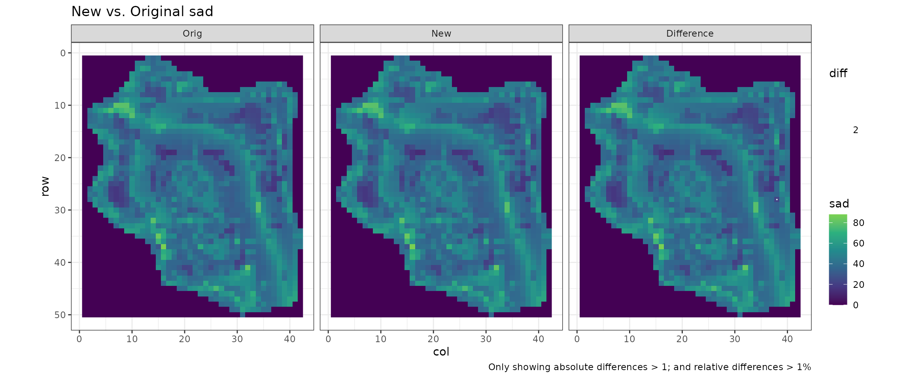
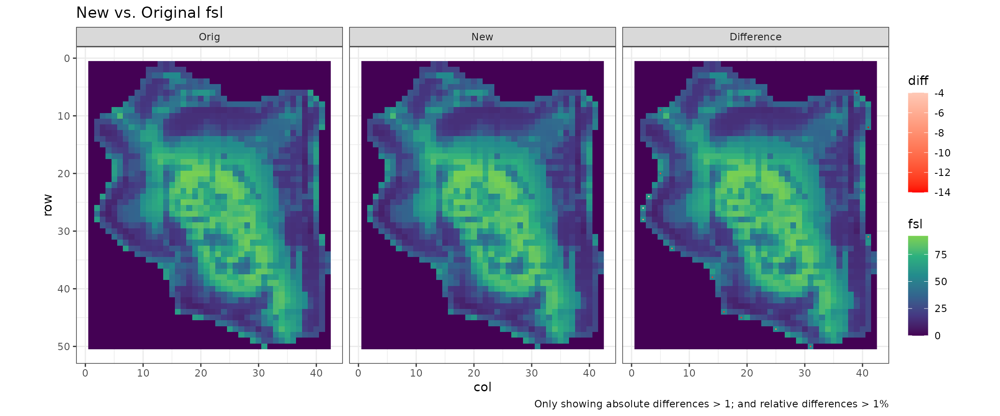
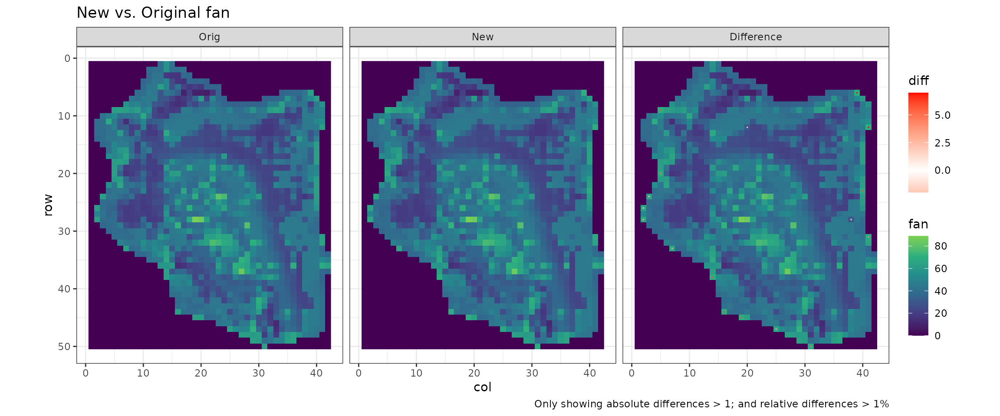

Test Facet - Ehsan
Steffi LaZerte
2024-10-01
Source:vignettes/reports/Ehsan_compare_report_facet.Rmd
Ehsan_compare_report_facet.RmdDetails
- 0.04 min to run
- /home/steffi/Projects/Business/LandmapR/Runs - FlowMapR/Ehsan original FacetMapR output
- arule file: ../Runs - LITAP/Ehsan/LM3ARULE.dbf
- crule file: ../Runs - LITAP/Ehsan/LM3CRULE.dbf
Visual Comparison of Form
Original vs. New Facet A values
Note: All differences in
convex,concaveandplanarvalues are related toform_mapper()differences in prof and plan which result from rounding…

 
